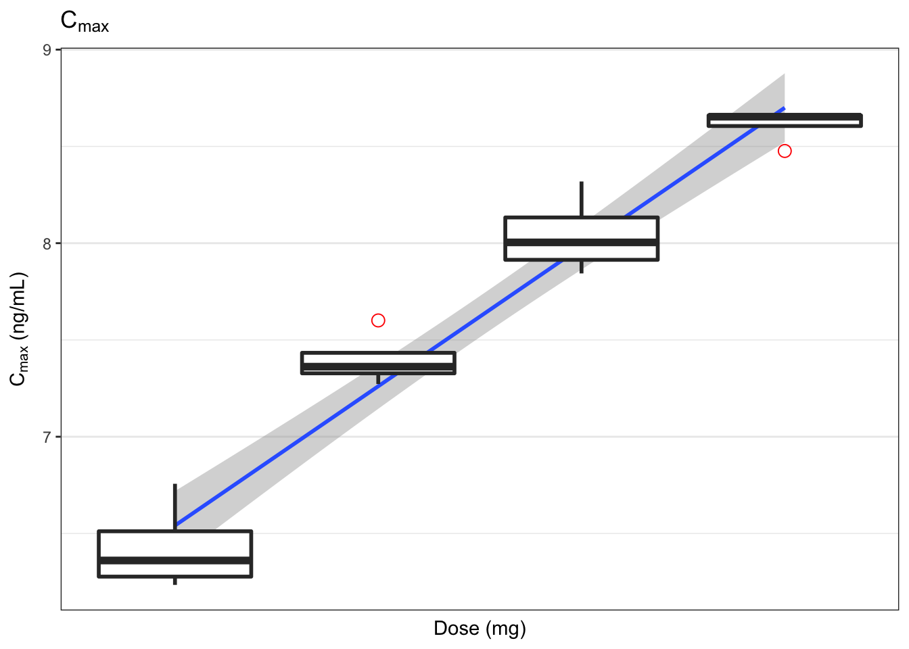
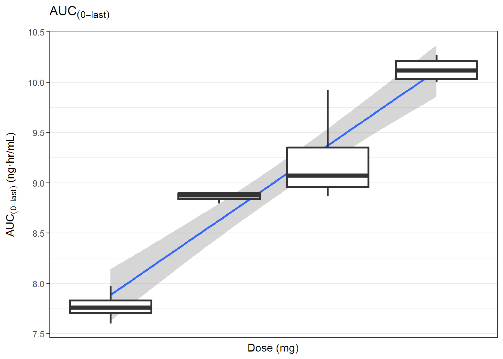

Chapter 8 통계처리
8.1 이 장에서는
생물학적 동등성, 용량 비례성을 확인하는 통계 처리 방법을 알아보겠습니다.
library(tidyverse)
library(ncarbe)
library(broom)8.2 기술통계량 구하기
앞서 4장에서 구한 TheophNca를 갖고 기술 통계량 (평균, 표준편차, 최소값, 최대값, skewness, kurtosis)을 구해보겠습니다. broom::tidy() 함수를 사용하면 간단히 구할 수 있습니다. 다만 NonCompart::tblNCA() 후 data.frame 형태로 저장되어 입력으로 주어져야 합니다.
descStatTheophNca <- tidy(as.data.frame(TheophNca, stringsAsFactors = FALSE)) %>%
select(column, n, mean, sd, min, max, skew, kurtosis)
knitr::kable(descStatTheophNca, digits = 2)| column | n | mean | sd | min | max | skew | kurtosis |
|---|---|---|---|---|---|---|---|
| Subject* | 12 | 6.50 | 3.61 | 1.00 | 12.00 | 0.00 | -1.50 |
| b0 | 12 | 2.39 | 0.25 | 2.03 | 2.82 | 0.13 | -1.38 |
| CMAX | 12 | 8.76 | 1.47 | 6.44 | 11.40 | 0.21 | -1.19 |
| CMAXD | 12 | 0.03 | 0.00 | 0.02 | 0.04 | 0.21 | -1.19 |
| TMAX | 12 | 1.79 | 1.11 | 0.63 | 3.55 | 0.70 | -1.35 |
| TLAG | 12 | 0.00 | 0.00 | 0.00 | 0.00 | NaN | NaN |
| CLST | 12 | 1.40 | 0.72 | 0.86 | 3.28 | 1.57 | 1.14 |
| CLSTP | 12 | 1.40 | 0.72 | 0.86 | 3.28 | 1.58 | 1.19 |
| TLST | 12 | 24.20 | 0.25 | 23.70 | 24.65 | -0.28 | -0.57 |
| LAMZHL | 12 | 8.18 | 2.12 | 6.29 | 14.30 | 1.90 | 2.97 |
| LAMZ | 12 | 0.09 | 0.02 | 0.05 | 0.11 | -0.92 | 0.40 |
| LAMZLL | 12 | 7.49 | 2.40 | 2.03 | 9.38 | -1.20 | -0.03 |
| LAMZUL | 12 | 24.20 | 0.25 | 23.70 | 24.65 | -0.28 | -0.57 |
| LAMZNPT | 12 | 3.83 | 1.34 | 3.00 | 7.00 | 1.32 | 0.28 |
| CORRXY | 12 | -1.00 | 0.00 | -1.00 | -1.00 | 2.20 | 3.87 |
| R2 | 12 | 1.00 | 0.00 | 0.99 | 1.00 | -2.20 | 3.87 |
| R2ADJ | 12 | 1.00 | 0.00 | 0.99 | 1.00 | -2.05 | 3.39 |
| AUCLST | 12 | 103.81 | 23.65 | 73.78 | 148.92 | 0.56 | -1.12 |
| AUCALL | 12 | 103.81 | 23.65 | 73.78 | 148.92 | 0.56 | -1.12 |
| AUCIFO | 12 | 122.19 | 38.13 | 84.25 | 216.61 | 1.25 | 0.51 |
| AUCIFOD | 12 | 0.38 | 0.12 | 0.26 | 0.68 | 1.25 | 0.51 |
| AUCIFP | 12 | 122.18 | 38.11 | 84.50 | 216.61 | 1.26 | 0.52 |
| AUCIFPD | 12 | 0.38 | 0.12 | 0.26 | 0.68 | 1.26 | 0.52 |
| AUCPEO | 12 | 13.54 | 6.35 | 8.13 | 31.25 | 1.71 | 2.19 |
| AUCPEP | 12 | 13.54 | 6.34 | 8.16 | 31.25 | 1.72 | 2.23 |
| AUMCLST | 12 | 883.06 | 262.98 | 609.15 | 1459.07 | 0.92 | -0.42 |
| AUMCIFO | 12 | 1590.30 | 1006.57 | 928.56 | 4505.53 | 2.00 | 2.96 |
| AUMCIFP | 12 | 1589.85 | 1006.06 | 928.49 | 4505.67 | 2.01 | 2.97 |
| AUMCPEO | 12 | 38.72 | 11.10 | 26.50 | 67.62 | 1.29 | 1.10 |
| AUMCPEP | 12 | 38.72 | 11.07 | 26.59 | 67.62 | 1.30 | 1.14 |
| VZFO | 12 | 31.93 | 6.47 | 22.22 | 43.26 | 0.20 | -1.40 |
| VZFP | 12 | 31.92 | 6.46 | 22.22 | 43.14 | 0.19 | -1.41 |
| CLFO | 12 | 2.81 | 0.68 | 1.48 | 3.80 | -0.45 | -0.93 |
| CLFP | 12 | 2.81 | 0.68 | 1.48 | 3.79 | -0.46 | -0.93 |
| MRTEVLST | 12 | 8.41 | 0.59 | 7.71 | 9.80 | 0.99 | 0.12 |
| MRTEVIFO | 12 | 12.29 | 2.96 | 9.98 | 20.80 | 1.90 | 2.83 |
| MRTEVIFP | 12 | 12.29 | 2.95 | 9.95 | 20.80 | 1.91 | 2.84 |
8.3 생물학적 동등성
생물학적 동등성을 위한 가장 간단한 방법은 ncarbe 패키지(Bae and Han 2018)를 쓰는 것입니다.
install.packages('devtools')
devtools::install_github('asancpt/ncarbe')Chow와 Liu의 책의 내용을 충실히 반영하였습니다. (Chow 2009) 생물학적 동등성을 위한 수학 식은 다음과 같습니다. (8.1)
\[ \begin{align} 0.8 < 90\%\ CI\ of\ \frac{GM(AUC_{last, test})}{GM(AUC_{last, ref})} < 1.25 \\ 0.8 < 90\%\ CI\ of\ \frac{GM(AUC_{last, test})}{GM(AUC_{last, ref})} < 1.25 \tag{8.1} \end{align} \]
현재로서는 2x2 디자인의 간단한 임상시험 디자인만을 지원하고 있습니다. (그림 8.1) 핵심이 되는 함수는 beNCA() 입니다.
knitr::include_graphics('assets/twobytwo.jpg')
Figure 8.1: 전형적인 2x2 설계
## function (concData, SUBJ = "SUBJ", GRP = "GRP", PRD = "PRD",
## TRT = "TRT", method = "kbe", ...)
## NULL다음과 같은 함수 인자를 설정해 주면 됩니다.
- SUBJ: Subject ID, any data type
- GRP: column name in which information of “RT” or “TR” exists.
- PRD: column name in which information of 1 or 2 exists.
- TRT: column name in which information of “R” or “T” exists.
- method:
kbeby authors ornlmepackage uploaded on CRAN
ncarbe 패키지 내에 있는 자료를 사용할 것입니다. (Table 8.1)
file <- system.file('example', 'beConc.csv', package = 'ncarbe')
concData <- read_csv(file)| SUBJ | GRP | PRD | TRT | nTIME | TIME | CONC |
|---|---|---|---|---|---|---|
| 1 | RT | 1 | R | 0.00 | 0.02 | 63.42 |
| 1 | RT | 1 | R | 0.25 | 0.24 | 432.76 |
| 1 | RT | 1 | R | 0.50 | 0.51 | 622.88 |
| 1 | RT | 1 | R | 0.75 | 0.80 | 809.93 |
| 1 | RT | 1 | R | 1.00 | 1.02 | 824.34 |
| 1 | RT | 1 | R | 2.00 | 2.04 | 602.22 |
| 1 | RT | 1 | R | 3.00 | 2.96 | 512.28 |
| 1 | RT | 1 | R | 4.00 | 3.99 | 421.99 |
| 1 | RT | 1 | R | 6.00 | 6.04 | 302.73 |
| 1 | RT | 1 | R | 8.00 | 8.04 | 181.60 |
beNCA(concData)##
##
## [AUClast]
##
## $`Analysis of Variance`
## SS DF MS F p
## SUBJECT 2.8102897 35 0.08029399 1.972327 0.02517703
## GROUP 0.2811516 1 0.28115157 3.779609 0.06019307
## SUBJECT(GROUP) 2.5291381 34 0.07438642 1.827214 0.04166286
## PERIOD 0.2887407 1 0.28874073 7.092573 0.01174249
## DRUG 0.1186721 1 0.11867210 2.915039 0.09687516
## ERROR 1.3841500 34 0.04071029 NA NA
## TOTAL 4.5500268 71 NA NA NA
##
## $`Between and Within Subject Variability`
## Between Subject Within Subject
## Variance Estimate 0.01683806 0.04071029
## Coefficient of Variation, CV(%) 13.03097098 20.38389491
##
## $`Least Square Means`
## Reference Drug Test Drug
## Geometric Means 5047.026 4648.063
##
## $`90% Confidence Interval`
## Lower Limit Point Estimate Upper Limit
## 90% CI for Ratio 0.8488229 0.920951 0.9992081
##
## $`Sample Size`
## True Ratio=1 True Ratio=Point Estimate
## 80% Power Sample Size 8 14
##
##
##
## [Cmax]
##
## $`Analysis of Variance`
## SS DF MS F p
## SUBJECT 2.85581816 35 0.08159480 0.9694346 0.5367126
## GROUP 0.08840271 1 0.08840271 1.0861008 0.3046908
## SUBJECT(GROUP) 2.76741545 34 0.08139457 0.9670557 0.5386164
## PERIOD 0.04931289 1 0.04931289 0.5858905 0.4492937
## DRUG 0.10908566 1 0.10908566 1.2960558 0.2628934
## ERROR 2.86169200 34 0.08416741 NA NA
## TOTAL 5.85528790 71 NA NA NA
##
## $`Between and Within Subject Variability`
## Between Subject Within Subject
## Variance Estimate -0.00138642 0.08416741
## Coefficient of Variation, CV(%) NaN 29.63291938
##
## $`Least Square Means`
## Reference Drug Test Drug
## Geometric Means 791.1619 731.1
##
## $`90% Confidence Interval`
## Lower Limit Point Estimate Upper Limit
## 90% CI for Ratio 0.8218317 0.924084 1.039059
##
## $`Sample Size`
## True Ratio=1 True Ratio=Point Estimate
## 80% Power Sample Size 16 26
##
##
##
## [Tmax]
##
## $`Wilcoxon Signed-Rank Test`
## p-value
## 0.3059991
##
## $`Hodges-Lehmann Estimate`
## Lower Limit Point Estimate Upper Limit
## 90% Confidence Interval -0.10000 0.0300 0.405
## 90% Confidence Interval(%) 92.18517 102.3444 131.650배균섭 교수님의 강의 자료에서 가져왔습니다.
knitr::include_graphics('assets/fixed-random.jpg')
Figure 8.2: 모수 인자와 변량 인자의 비교
8.4 Dose Proportionality
DP 처리.
16명의 Cmax와 AUClast가 나온 표입니다. Table 8.2
# setup ----
library(readxl)
library(tidyverse)
library(broom)
dp_data <- # Virtual data from 4 dose groups (N=16)
'Dose,Subject,Cmax,AUClast
50,101,860,2000
50,102,510,2300
50,103,620,2900
50,104,540,2400
100,201,1550,6600
100,202,1440,7400
100,203,2000,7300
100,204,1600,7000
200,301,4100,20400
200,302,2800,9500
200,303,3200,8000
200,304,2550,7070
400,401,4800,22000
400,402,5700,23000
400,403,5800,26700
400,404,5760,28884'
sad_indi_pk <- read_csv(dp_data)
knitr::kable(sad_indi_pk, caption = '16명의 C~max~, AUC~last~')| Dose | Subject | Cmax | AUClast |
|---|---|---|---|
| 50 | 101 | 860 | 2000 |
| 50 | 102 | 510 | 2300 |
| 50 | 103 | 620 | 2900 |
| 50 | 104 | 540 | 2400 |
| 100 | 201 | 1550 | 6600 |
| 100 | 202 | 1440 | 7400 |
| 100 | 203 | 2000 | 7300 |
| 100 | 204 | 1600 | 7000 |
| 200 | 301 | 4100 | 20400 |
| 200 | 302 | 2800 | 9500 |
| 200 | 303 | 3200 | 8000 |
| 200 | 304 | 2550 | 7070 |
| 400 | 401 | 4800 | 22000 |
| 400 | 402 | 5700 | 23000 |
| 400 | 403 | 5800 | 26700 |
| 400 | 404 | 5760 | 28884 |
그림을 살펴보겠습니다.
sad_indi_pk_log <- sad_indi_pk %>% mutate_all(log)
figA <- ggplot(sad_indi_pk_log, aes(x=Dose, y=Cmax)) +
geom_smooth(method = 'lm')+
geom_boxplot(aes(group = Dose),
size = 1,
outlier.colour = "red",
outlier.shape = 1,
outlier.size = 3) +
theme_bw() +
scale_x_continuous(breaks = c(50, 100, 200, 400)) +
labs(x = 'Dose (mg)', y = expression('C'[max]*' (ng/mL)'),
title = expression('C'[max]))
figA
figB <- ggplot(sad_indi_pk_log, aes(x=Dose, y=AUClast)) +
geom_smooth(method = 'lm')+
geom_boxplot(aes(group = Dose),
size = 1,
outlier.colour = "red",
outlier.shape = 1,
outlier.size = 3) +
theme_bw() +
scale_x_continuous(breaks = c(50, 100, 200, 400)) +
labs(x = 'Dose (mg)', y = expression('AUC'[(0-last)]*' (ng·hr/mL)'),
title = expression('AUC'[(0-last)]))
figB
lm() 함수를 써서 구할 수 있습니다.
calc_dp <- function(param, fit) {
bind_cols(fit %>% summary %>% tidy %>% filter(term == 'Dose'),
fit %>% confint(level = 0.95) %>% tidy %>% filter(.rownames == 'Dose'),
fit %>% summary %>% glance) %>%
filter(term == 'Dose') %>%
select(-.rownames, -term) %>%
mutate(parameters = param) %>%
mutate(est = sprintf('%0.2f (%0.2f)', estimate, std.error)) %>%
mutate(ci = sprintf('%0.2f-%0.2f', X2.5.., X97.5..)) %>%
select(parameters, est, ci, r.squared, p.value)
}
fit_cmax <- lm(formula = Cmax ~ Dose, data = sad_indi_pk_log)
fit_auclast <- lm(formula = AUClast ~ Dose, data = sad_indi_pk_log)
bind_rows(calc_dp(param = 'Cmax', fit = fit_cmax),
calc_dp(param = 'AUClast', fit = fit_auclast))| parameters | est | ci | r.squared | p.value |
|---|---|---|---|---|
| Cmax | 1.04 (0.06) | 0.90-1.18 | 0.9494890 | 0 |
| AUClast | 1.07 (0.09) | 0.87-1.27 | 0.9053706 | 0 |
Cmax는 dose proportionality 기준을 만족하는데 반해 AUClast는 만족하지 않는 것을 알 수 있습니다.
참고문헌
Bae, Kyun-Seop, and Sungpil Han. 2018. Ncarbe: Perform Be Test Using Noncompart Package.
Chow. 2009. Design and Analysis of Bioavailability and Bioequivalence Studies. Boca Raton: CRC Press.